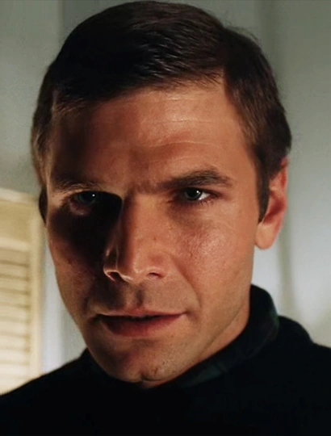
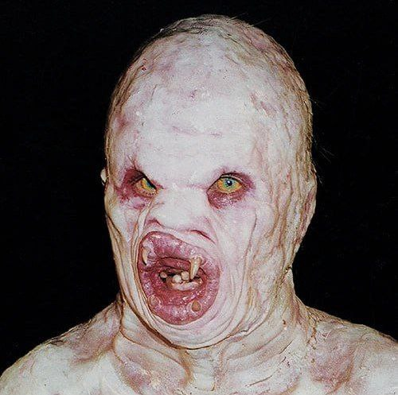
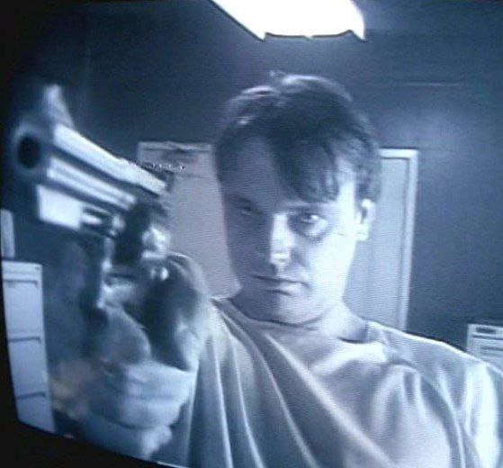
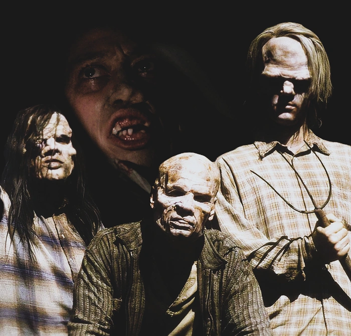
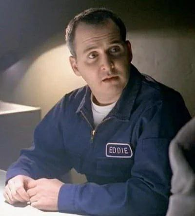
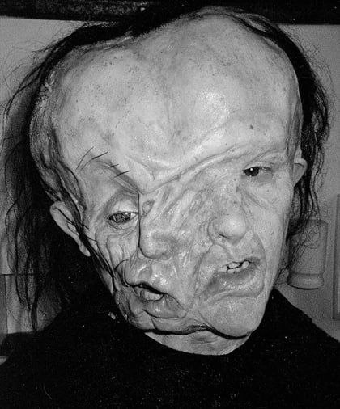
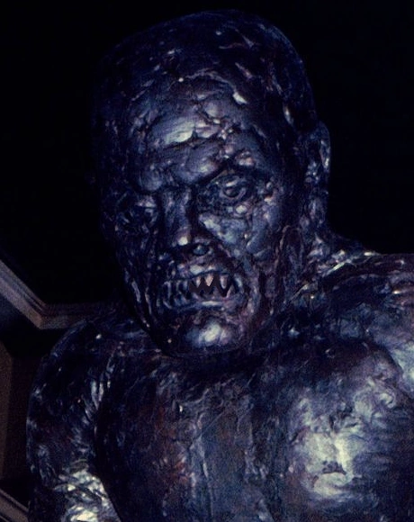

|
Евгений Виктор Тумс
— серийный убийца-мутант. Он обладает
способностью растягивать и сжимать своё тело, проникая через узкие пространства. Тумс
убивает людей каждые 30 лет, выедая их печень для поддержания жизненных сил перед длительной
спячкой. Этот столетний монстр отличается хитростью и терпением, умело скрывая свою истинную
природу под маской безобидного санитара. |
|  |
Donald "Donnie" Addie Pfaster
— психопатический серийный убийца,
известный как "ненасытный". Он страдает некрофилическим фетишем, коллекционируя волосы и
ногти своих жертв. В отличие от сверхъестественных монстров, Пфастер — обычный человек с
глубокими психическими отклонениями, что делает его особенно пугающим. Его одержимость
смертью и ритуалами осквернения тел эскалирует до похищения агента Скалли. Малдер
характеризует его как "сатану в человеческом обличье", подчеркивая, что настоящие монстры
могут скрываться среди обычных людей. |
|  |
Flukeman
— форма квазипозвоночного человека - был примером
репродуктивного и физиологического скрещивания из–за радиации, аномального слияния клеток
и/или подавления естественных генетических процессов. Генетическим мутант, который пробрался
в канализационную систему Нью-Джерси и убил несколько человек, прежде чем его выбросило на
Мартас-Винъярд. |
|  |
Роберт Патрик Моделл
, известный под прозвищем "Pusher", был
наемным убийцей, который развил в себе способности управлять сознанием, позволяющие ему,
по-видимому, контролировать действия других людей.
Эта способность, позволявшая Моделлу насильственно "навязывать" свою волю другим, чаще всего
звуком своего голоса, могла выдавать его убийства за самоубийства. Дана Скалли
охарактеризовала Моделла как "маленького человечка, который мечтает стать кем-то большим",
но в то же время является "высокоинтеллектуальным социопатом". |
|  |
Peacock family
— изолированная семья из четырёх человек в
Пенсильвании, практикующая инцест на протяжении нескольких поколений. Мать-инвалид без
конечностей живёт под кроватью и продолжает рожать детей от собственных сыновей. Трое
братьев — примитивные, жестокие и обладающие нечеловеческой силой мутанты, защищающие свой
"образ жизни" любой ценой. Семья олицетворяет ужас генетического вырождения и извращённое
понимательство семейных ценностей, где понятия "мать" и "жена" смешаны в одном лице. |
|  |
Edward "Eddie" H. Van Blundht Jr.
был уборщиком, работавшим
у доктора Элтона Пью в Мартинсберге, Западная Вирджиния. Он был человеком-мутантом, который
обладал причудливым количеством мышечной ткани под кожей по всему телу, что позволяло ему
изменять свою внешность по своему желанию, включая более детальные аспекты, такие как рост,
телосложение и голос, и родился с хвостом, что было распространенной генетической чертой в
его семье. |
|  |
The Great Mutato
— трагический монстр, созданный в результате
генетических экспериментов доктора Поллидори. В отличие от традиционных злодеев, он не
является жестоким убийцей — это несчастное существо с уродливой внешностью, мечтающее о
простых человеческих радостях. Мутато ищет любви и общения, но из-за своего страшного вида
вынужден скрываться. Его преступления ограничиваются оплодотворением женщин под воздействием
газа, чтобы создать себе подобных. Этот монстр символизирует одиночество и отверженность,
вызывая скорее сочувствие, чем страх. |
|  |
Ubermenscher
или тульпа — мистическое существо, созданное силой
коллективной мысли жителей закрытого сообщества. Этот монстр представляет собой
материализованную энергию, порожденную одержимостью соблюдением правил и конформизмом.
Тульпа нападает на тех, кто нарушает установленный порядок, исполняя желания сообщества об
идеальном соседстве. Особенность существа в том, что оно существует только пока в него
верят, и исчезает после смерти своего создателя. Этот монстр символизирует опасность
группового мышления и то, как стремление к тотальному контролю может порождать настоящих
монстров. |